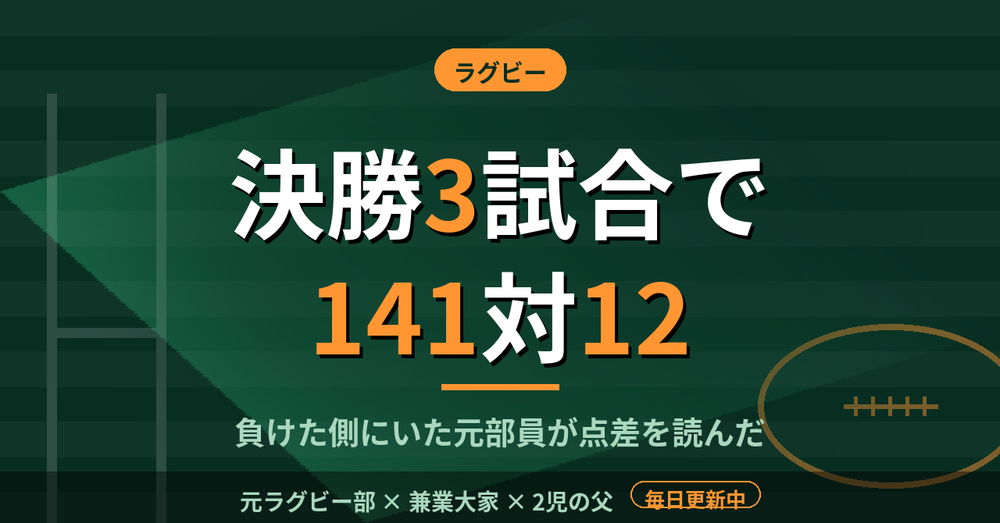

ラグビー大阪の花園予選決勝は3試合で141対12。決勝で負けた側にいた僕が点差を読んだ
11月15日、花園第一グラウンドで全国高校ラグビー大会の大阪府予選の決勝が3試合続けて行われた。高3の秋、僕はこの決勝で負けた側にいた。今年の結果が出そろったので、まず3試合の点差を足してみた。
3試合とも、勝った側が40点以上
第1地区は常翔学園が大阪産大付に45対5、第2地区は大阪桐蔭が近大付に41対0、第3地区は東海大仰星が関大北陽に55対7で勝った。3試合を足すと141対12になる。前半を終えた時点でも、常翔学園が24対5、大阪桐蔭が12対0、東海大仰星が22対0とリードしていた。
全国大会への出場は、常翔学園が3大会連続44回目、大阪桐蔭が6大会連続20回目、東海大仰星が8大会連続26回目になる。3校とも連続出場を伸ばし、今年も同じ顔ぶれが大阪から全国に出る。
1週間前の準決勝は、もっと開いていた
11月8日の準決勝は、さらに差が大きかった。大阪桐蔭は常翔啓光学園に126対0、東海大仰星は同志社香里に93対0、常翔学園は合同チームに74対7で勝っている。3校の準決勝を足すと293対7で、決勝の141対12よりさらに開いている。
おもしろいのは、決勝で敗れた3校の準決勝だ。関大北陽は関大一に90対0、近大付は浪速に38対0、大阪産大付は金光藤蔭に26対5で勝っている。90点を取って決勝に来たチームが、翌週は7点にとどまった。大阪は全国に3校を送れる唯一の府県で、地区ごとに頂点を決める。今年の3試合は、どれも「上位3校」と「その山を勝ち上がった学校」の対戦になった。上位とその次の差が、点差にそのまま出ている。
負けた側に残るのは、点差ではなく一本のプレー
あの決勝のことは、細かいところまで今も覚えている。中でもいちばん残っているのは、そこまで難しくない位置からのPGを自分が外したことだ。試合の流れや点差より先に、その一本が浮かぶ。
高2のときも、僕は同じ花園第一グラウンドで予選の決勝に出ている。2年続けてあの舞台に立ったが、記憶の濃さは高3の決勝のほうがずっと上だ。勝てば全国という試合で、自分のキックが結果に関わったからだと思う。
40点差の試合でも、負けた側の選手にはそれぞれ、そういう一本があるはずだと思う。点差だけ見れば一方的な試合でも、準決勝で90点を取ったチームの15人は、決勝の60分を全力で戦っている。新聞の結果欄に載るのは数字だけだが、当事者の記憶に残るのは数字ではない場面のほうだ。
あの経験から、僕は大事な場面でのメンタルは自分の得意分野ではないと自覚した。今の仕事や不動産の判断で、先に基準を決めておく癖がついたのは、あの一本が出発点になっている。
12月27日から、全国大会
全国大会は12月27日に開幕し、1月7日まで続く。大阪の3校は、予選の決勝を40点以上の差で抜けてきた。全国では、同じくらいの力を持つ他県の代表と当たる。準決勝と決勝で競った試合をしていないことが、接戦の場面でどう出るかを見たい。
今年も年末は花園の結果を追う。決勝で負けた3校の選手には、その結果欄の外側にある60分を、いつか自分の言葉で話せる日が来ると思う。
この記事は note にも掲載しています。